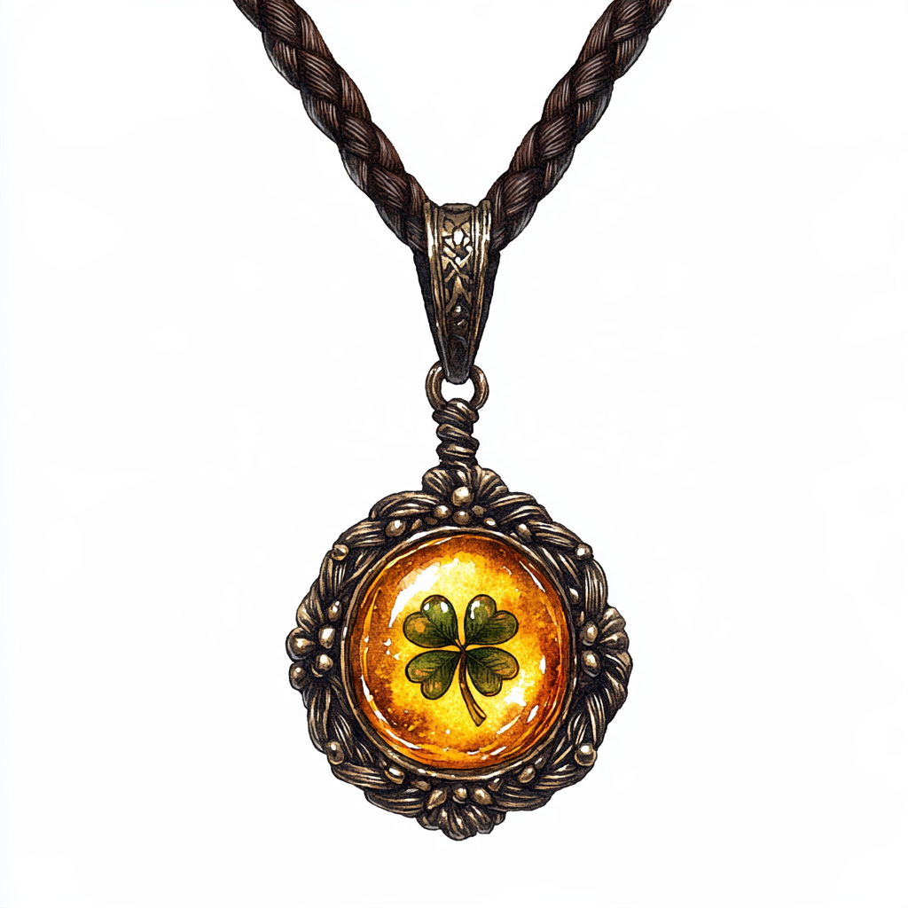
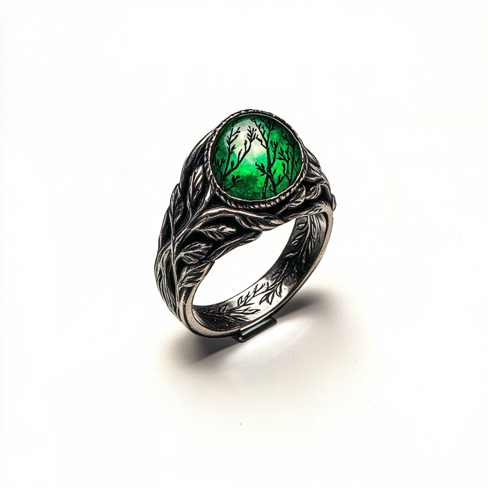

Glücks-Amulett
◈ Ausrüstungsdeck · Zubehör

»Ein feines goldenes Medaillon an geflochtenem Lederband. Scheint das Schicksal im rechten Moment zu wenden.«
✨ EffektSpezial
SlotZubehör
💰 Wert3 Gold
📜 Gegenstandseffekt
Sonderregel
1× pro Szenario: Wiederhole einen beliebigen eigenen Würfelwurf.

Ring des Waldläufers
◈ Ausrüstungsdeck · Zubehör

»Aus verschlungenem Silber und leuchtendem Smaragd geschmiedet. Lässt den Träger trittsicher über jedes Hindernis gleiten.«
✨ EffektSpezial
SlotZubehör
💰 Wert4 Gold
📜 Gegenstandseffekt
Sonderregel
Ignoriert Bewegungskosten durch schwieriges Gelände (z. B. Geröll, Schleim).